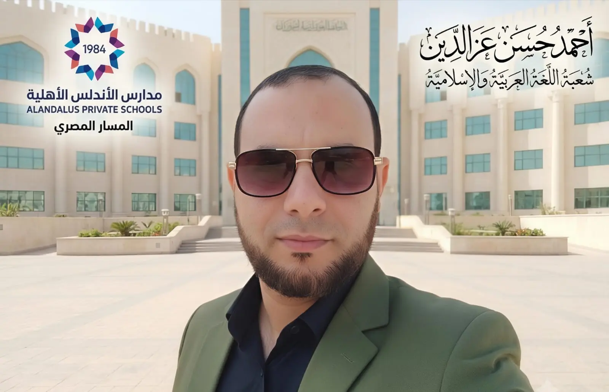

مدارس الأندلس الأهلية - المسار المصري
تعرّف على معلمك
العام الدراسي 2026-2027
رحلتي مع اللغة العربية
الصف الثاني الابتدائي - الفصل الدراسي الأول
اسم الطالب
الفصل
ابدأ رحلتي
أكمل آخر سؤال
أكمل آخر درس

معلم المادة
الأستاذ أحمد حسن عز الدين
تعرّف عليه
تطوير وبرمجة التطبيق
مستر محمد فريد
رحلتي مع اللغة العربية
تعرّف على معلمك
أحمد حسن أحمد عزالدين
معلم اللغة العربية والتربية الإسلامية
ليسانس آداب وتربية - لغة عربية - جامعة الفيوم.
دراسات عليا في اضطرابات التواصل والتربية الخاصة - جامعة عين شمس.
خبرة 18 عامًا في مجال التعليم.
إجازة في التجويد النظري والعملي ومتن تحفة الأطفال - معهد ابن الجزري.
دبلوم مهني في الإرشاد النفسي.
دبلوم مهني في الاستراتيجيات الحديثة - المركز الدولي.
دبلوم مهني في الصحة النفسية - المركز الدولي.
دبلوم مهني في تعديل السلوك - المركز الدولي.
رخصة معلم خبير - منصة كلاسيرا.
رخصة مهنية - وزارة التعليم السعودية.